사용법
처음 오셨다면 1번부터 보시면 돼요.
3분 요약
목차 · 11장
1. 처음 들어가기
아래 버튼을 누르거나, 단톡방에 올라온 링크를 눌러주세요.
단톡방 링크는 카카오톡 안에서 열려요. 카카오톡 · 인스타그램 · 네이버 앱 안에서 열면
카카오로 로그인 아래에 「○○ 안에서는 알림을 못 받아요」 안내와 다른 브라우저로 열기 단추가 떠요.
누르면 갤럭시는 평소 쓰는 브라우저(삼성 인터넷 · 크롬), 아이폰은 사파리로 열려요.
거기서 로그인하면 알림까지 한 번에 끝나요.
그 자리에서 그냥 로그인해도 돼요 — 다만 나중에 옮기면 카카오 로그인을 한 번 더 해야 해요(본인 확인은 다시 안 해요).
인스타 · 네이버 앱은 단추가 「사파리로 열기」(아이폰) · 「크롬으로 열기」(갤럭시)예요.
아이폰에서 안 열리면 ··· 또는 공유 → 브라우저에서 열기를 눌러주세요.
노란 버튼을 누르면 카카오 화면으로 넘어가요. 닉네임만 받아오고, 친구목록이나 메시지는 보지 않아요.
카카오는 닉네임만 알려줘서, 명부의 누구인지 한 번만 확인해요. 동아리 명부에 적어낸 번호 기준이에요.
다음부터는 카카오 로그인만 하면 바로 들어와요. 한 번 이어지면 다른 카카오 계정은 그 이름을 쓸 수 없어요.
2. 홈 화면에 추가하기
아래 공유 버튼(↑ 네모) → 쭉 내려서 홈 화면에 추가 → 추가
오른쪽 위 ⋮ 메뉴 → 홈 화면에 추가 → 추가
3. 알림 켜기
단톡방 링크를 바로 누르면 카카오톡 안 브라우저로 열려요.
거기서는 알림도 홈 화면 추가도 안 돼요.
로그인 화면이나 알림 설정에 뜨는 다른 브라우저로 열기를 눌러주세요 —
갤럭시는 평소 쓰는 브라우저, 아이폰은 사파리로 열려요.
안 열리면 오른쪽 아래 ··· → 다른 브라우저로 열기(아이폰은 Safari로 열기).
홈 화면에 추가를 먼저 해야 해요 (위 2번). 그 다음 홈 화면의 발바닥 아이콘으로 들어와서 프로필(오른쪽 위 동그라미) → 알림 설정 → 알림 켜기.
아이폰은 iOS 16.4 이상이어야 해요.
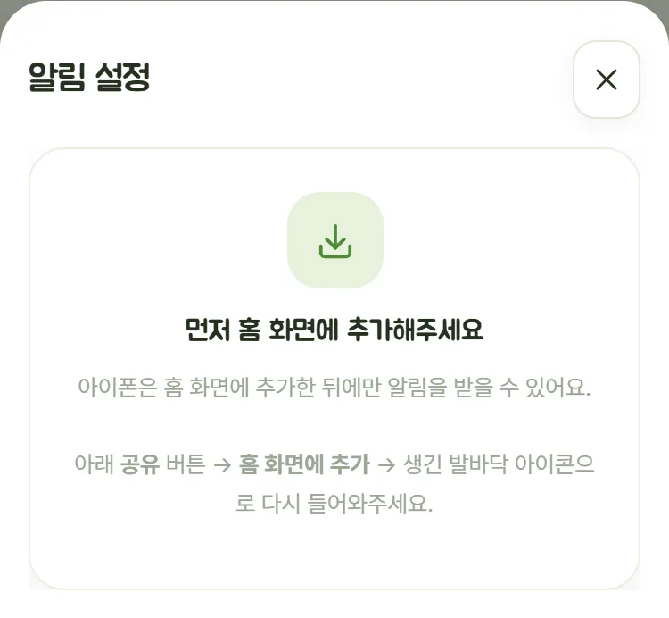
프로필(오른쪽 위 동그라미) → 알림 설정 → 알림 켜기. 홈 화면 추가를 안 해도 받을 수 있어요.
새 글 · 댓글 · 답글 · 언급(@) · 반응 · 봉사 열림 · 대기 → 신청 · 공지 · 설문 마감 · 퀴즈 결과 · 봉사 전날 · 봉사 감사 · 칭찬·축하
누가 나를 @로 부르면 알림이 와요. 「언급(@)」 칸에서 끌 수 있어요.
운영진이 내 의견에 답장하면 알림이 와요(「공지」 칸을 따라가요).
내 글에 좋아요가 달리면 「○○님이 내 글을 좋아해요」 알림이 와요 — 연달아 받아도 10분에 한 번만 와요.
대기에서 신청으로 올라가면 「자리가 났어요!」 알림이 바로 와요.
알림을 누르면 그 글이 바로 열려요. 오래된 글이어도 열리고,
지워진 글이면 「지워진 글이에요」라고 알려줘요.
인터넷이 불안정해 못 열면 「글을 열지 못했어요. 잠시 뒤 다시 해주세요」가 떠요 — 잠시 뒤 다시 눌러주세요.
알림을 켠 뒤 종류마다 보내 보기를 누르면 나에게만 보내서 어떻게 보이는지 확인할 수 있어요.
「알림을 받고 있어요」가 떠야 켜진 거예요. 저장이 안 되면 「알림 켜기」 단추가 그대로 남고 왜 안 됐는지 아래처럼 알려줘요.
인스타그램 · 네이버 앱 · 라인 · 페이스북 안에서도 그 앱 이름으로 같은 안내가 떠요. 앱 안 브라우저는 알림을 받지 못해요.
① 그 화면의 다른 브라우저로 열기 → 갤럭시는 평소 브라우저, 아이폰은 사파리로 열려요
② 거기서 카카오로 로그인을 한 번 더 해주세요(본인 확인은 다시 안 해요)
③ 아이폰은 사파리에서 홈 화면에 추가(위 2번)부터, 갤럭시는 바로 알림 설정 → 알림 켜기
지금 들어온 카카오 계정이 명부의 내 이름과 이어져 있지 않아요.
갤럭시 크롬에서 자주 생겨요 — 크롬에 예전 카카오 계정이 남아 있으면 그쪽으로 들어가거든요.
① 프로필 → 로그아웃 → 다시 카카오로 로그인
② 이름 · 뒤 4자리를 넣었는데 「다른 카카오 계정으로 이어져 있어요」가 뜨면
카카오 계정 다시 고르기 → 카카오톡에서 쓰는 계정을 골라주세요
③ 들어온 뒤 알림 설정 → 알림 켜기를 다시 눌러주세요.
그래도 안 되면 운영진에게 말해 주세요 — 운영진이 연결을 풀어 주면 다시 본인 확인을 하면 돼요.
와이파이나 데이터를 확인하고 알림 켜기를 다시 눌러주세요.
다시 카카오로 로그인한 뒤 켜 주세요.
한 번 켜 두면 앱을 열 때마다 알아서 다시 맞춰요. 폰이 알림 주소를 바꿔도 따로 할 일은 없어요.
4. 봉사 신청하기
다가오는 봉사 카드에서 신청하기를 누르면 끝이에요. 못 가게 되면 신청 취소를 눌러주세요. 신청이 열리기 전에는 신청되지 않아요.
정원이 차면 대기 신청하기가 보여요. 누가 취소하면 먼저 신청한 대기자부터 자동으로 올라가요(운영진이 확정하기 전 · 봉사 날 전까지). 올라가면 「자리가 났어요!」 알림이 와요(내가 직접 누른 신청에는 안 와요). 못 가면 꼭 취소해 주세요.
다가오는 봉사 카드 「선착순 3 / 8명」 옆에 신청한 사람이 있으면 얼굴이 다섯 개까지 겹쳐 보여요(더 있으면 「+n」). 얼굴을 누르면 신청한 순서대로 사진 · 이름 · 기수가 나오고, 대기자는 따로 보여요. 신청하거나 취소하면 바로 바뀌어요.
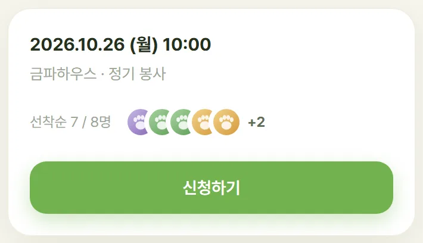
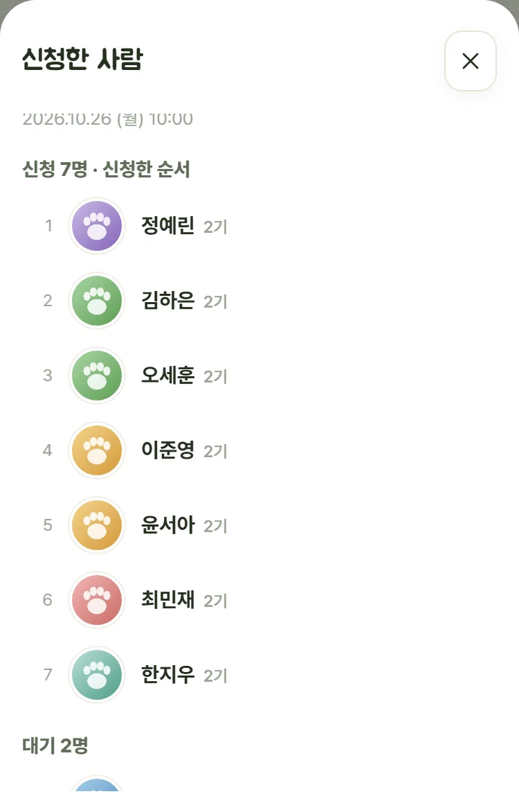
봉사 탭 아래 「지난 봉사」는 최근 3개만 보여요. 지난 봉사 전체 보기 (n)를 누르면 달별로 모아 보여요(이번 달만 펼쳐져 있어요). 내가 간 봉사만 · 보호소별로 골라 볼 수 있고, 아래 20개 더 보기로 더 불러와요. 줄마다 후기 몇 개인지 나오고, 누르면 그 봉사 후기가 모여 보여요(후기가 없으면 후기 쓰기 창이 열려요).
나 탭의 「내가 간 봉사」에도 같은 전체 보기가 있어요.
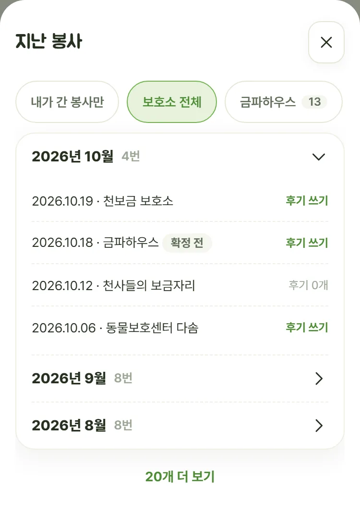
다녀온 뒤 봉사 실적은 운영진이 확정해야 쌓여요.
5. 후기 올리기
운영진이 확정한 봉사 중에서 고르면 날짜와 보호소가 같이 들어가요. 없으면 직접 입력해요.
열 장까지 넣을 수 있어요. 길게 눌러 끌면 순서가 바뀌고, ✕ 로 뺄 수 있어요. 사진은 찍은 장소 정보를 지우고 올라가요(영상은 그대로예요).
짧은 영상도 한 개 올릴 수 있어요 — 30초 · 20MB 이하. 더 길면 잘라서 올려 주세요.
「발자국 인스타그램에 올려도 괜찮아요」를 고르면 피드에 쓸 수 있어요. 다른 부원 얼굴이 나오면 그 부원에게도 물어봐 주세요.
글 아래 더하기 칩 두 개가 있어요. 안 눌러도 그냥 올라가요.
글에 @를 치면 이름 목록이 떠요. 홈에서 물어볼 때 쓰면 그 봉사에 같이 다녀온 사람이 먼저 보여요. 고르면 그 사람에게 알림이 가요.
봉사 날부터 일주일 동안 홈 맨 위에 「(오늘 · 어제) ○○ 봉사 어땠어요?」 카드가 떠요(그 봉사 명단에 있고 아직 후기를 안 썼을 때). 거기서 후기 쓰기를 누르면 더 빨라요. ✕ 로 닫으면 다시 안 떠요.
사진 모아보기홈 칩 줄 오른쪽 네모 네 개 단추를 누르면 후기 사진이 한곳에 모여요. 사진을 누르면 그 후기 글로 가요.
6. 오늘 만난 친구
후기 쓸 때 🐾 만난 친구를 누르면 그 보호소 아이들이 나와요. 목록에 없으면 이름을 적어 더하면 돼요.
카드에 발바닥 이름표로 붙고, 누르면 그 아이가 나온 후기만 모여서 보여요. 입양 간 아이는 입양 표시가 붙어요.
7. 설문과 퀴즈
퀴즈는 발표 전까지 아무에게도 정답이 안 보여요.
몇 명이 뭘 골랐는지도 안 보여요 — 그게 힌트가 되니까요.
발표 시각이 되면 정답과 「몇 명 중 몇 명 정답」이 뜨고, 답한 사람에게 알림이 가요.
8. 좋아요 · 댓글 · 답글 · @부르기
남이 한 것도 바로 떠요. 좋아요 · 댓글은 그 카드만 바로 바뀌어요. 새 글은 읽던 자리가 밀리지 않게 위에 「새 글 n개 ↑」 알약만 떠요 — 누르면 맨 위로 올라가 새 글을 보여줘요.
글 아래 하트를 누르면 좋아요예요. 「좋아요 n개」를 누르면 누가 눌렀는지 사진과 이름으로 보여요. 댓글에도 하트가 있어요.
「답글 달기」를 누르면 그 사람 @이름이 입력칸에 먼저 들어가고, 그 댓글 바로 아래에 붙어요. 답글은 그 댓글 밑에 모두 보여요.
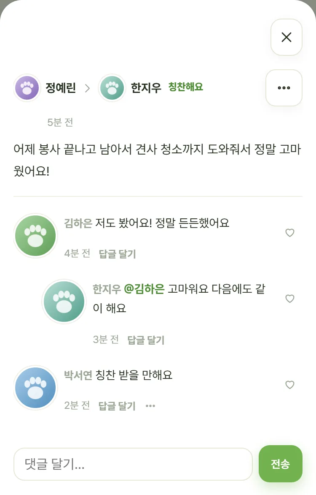
글이나 댓글을 쓸 때 @를 치면 이름 목록이 떠요. 고르면 그 사람에게 알림이 가요.
내 글은 ··· → 글 고치기 · 글 지우기, 내 댓글은 ··· → 고치기 · 지우기. 고치면 시간 옆에 「수정됨」이 붙어요. 지우면 되돌릴 수 없어요.
내 글에 달린 댓글·좋아요는 알림이 와요(좋아요는 10분에 한 번 묶어서). 남의 글에 달린 건 안 와요.
내 댓글에 좋아요가 달려도 알림이 와요.
내가 쓴 댓글에 답글이 달리면 알림이 와요.
불편한 글은 ··· → 신고하기. 운영진만 보고, 글쓴이에게는 누가 신고했는지 보이지 않아요.
9. 내 활동 · 프로필 · 의견 보내기
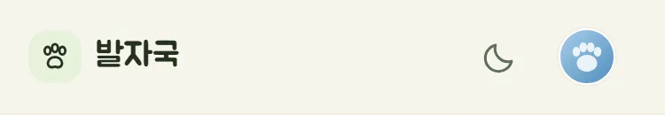
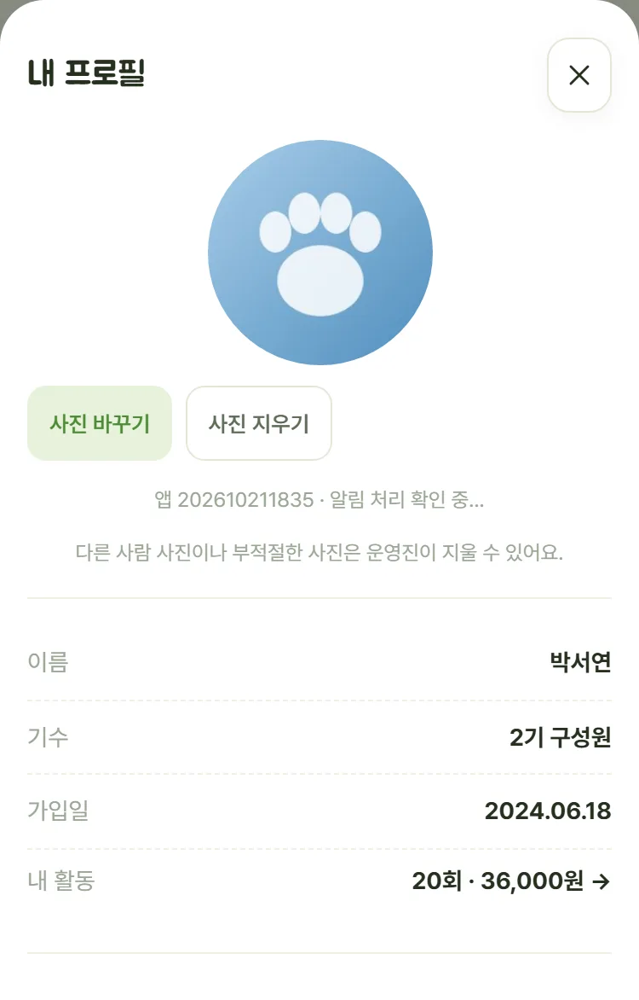
숫자는 운영진이 확정한 봉사만 세요. 다녀온 날 바로 안 올라가도 걱정하지 마세요. 확정되면 반영돼요.
프로필 → 사진 바꾸기 → 사진을 고르면 자르는 화면이 떠요. 사진을 끌어서 동그라미 안에 맞추고, 아래 막대로 크기를 바꾼 뒤 확인. 취소하면 아무것도 안 바뀌어요.
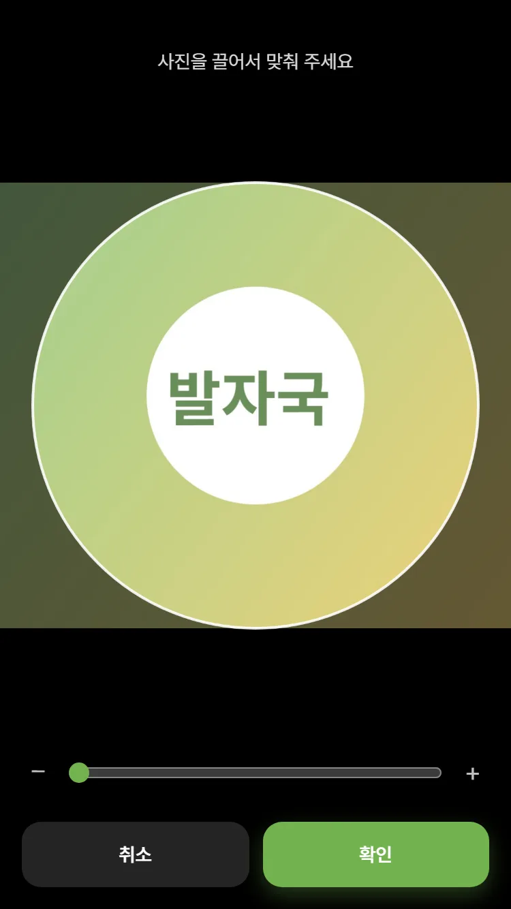
내 사진은 프로필에서 큰 동그라미를 누르면, 다른 사람 사진은 글이나 댓글의 동그라미 → 열린 프로필의 사진을 누르면 크게 보여요. 다른 사람 프로필에는 이름 · 사진 · 기수만 보여요.
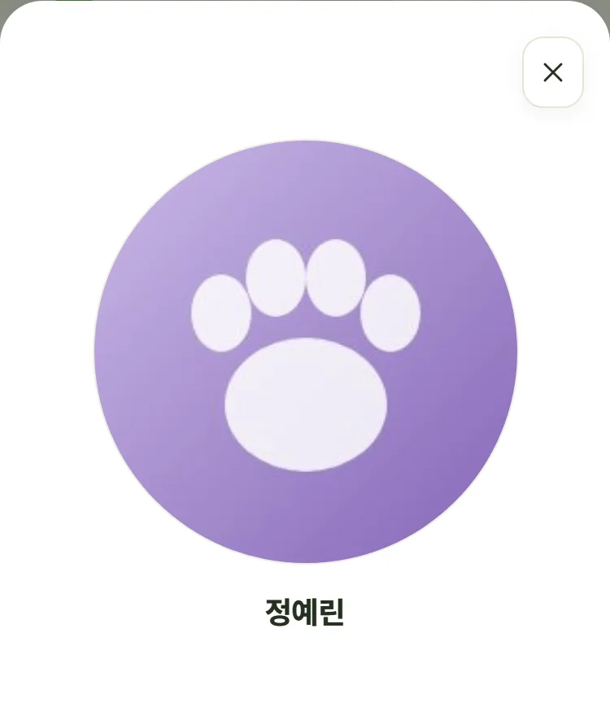
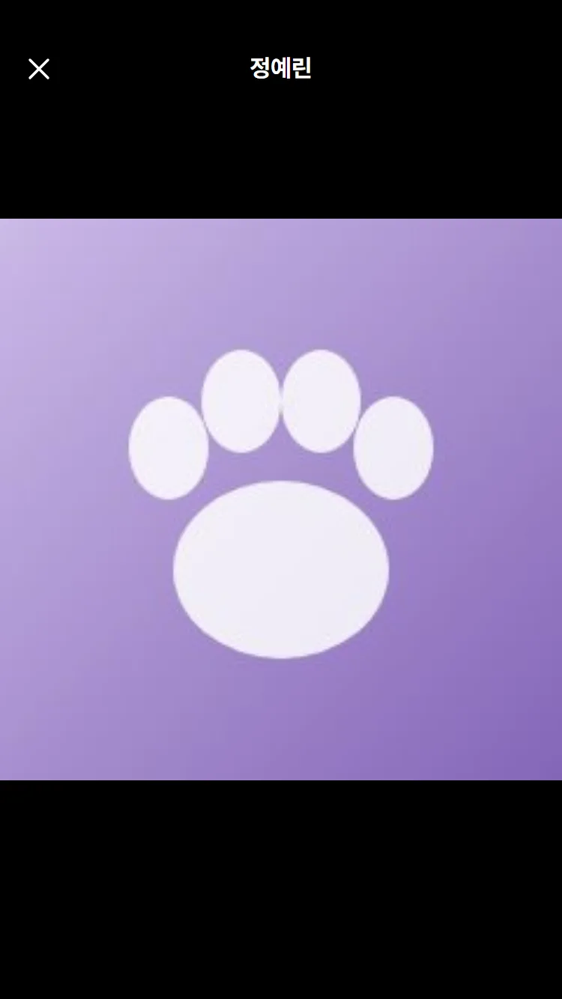
프로필 → 운영진에게 의견 보내기. 아래 「내가 보낸 의견」에서 보낸 것과 운영진 답장을 볼 수 있어요. 답장이 오면 새 소식과 알림으로도 알려줘요.
이름 없이 보내기를 켜면 누가 보냈는지 남지 않아요(하루 세 번까지, 「내가 보낸 의견」에도 안 남아요). 대신 운영진이 답장할 수 없어요.
(운영진이 아닐 때) 프로필 → 운영진 지원하기 → 지원하는 이유를 짧게 적어 보내요. 운영진이 보고 연락드려요. 확인하는 동안은 「지원 확인 중이에요」로 보여요.
칭찬해요 · 명예의 전당
홈 오른쪽 아래 + → 칭찬해요 → 세 단계면 끝나요.
① 누구를 칭찬할까요? — 이름으로 찾아 한 명을 골라요(사진 · 기수가 같이 보여요. 나는 목록에 없어요)
② 어떤 점이 고마웠나요? — 두 글자 이상
③ 사진 — 없어도 돼요 → 올리기
피드 카드 맨 위에 「[사진] 쓴 사람 → [사진] 칭찬받은 사람 · 칭찬해요」 한 줄로 올라가요. 사진이나 이름을 누르면 그 사람 프로필이 열려요. 전체와 자유게시판 둘 다에 보여요. 하트 · 댓글 · 고치기 · 지우기는 다른 글과 같아요(칭찬받는 사람은 바꿀 수 없어요).
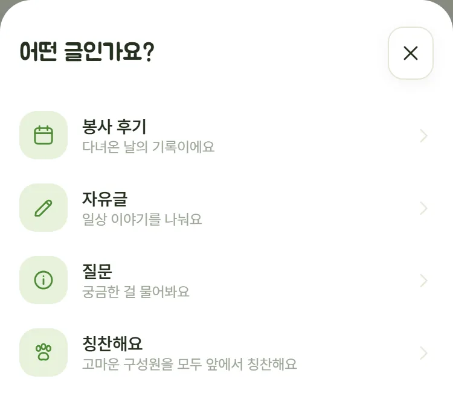
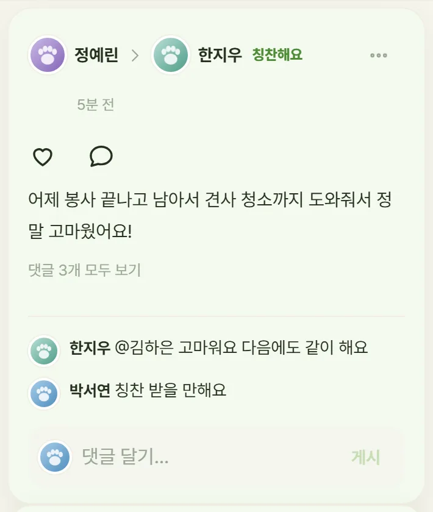
칭찬받은 사람에게 「회원님이 칭찬받았어요!」, 다른 사람들에게 「○○님이 △△님을 칭찬했어요」가 가요. 칭찬받은 사람에게는 하나만 가요.
칭찬받으면 아래 나 탭 새 소식에도 「○○님이 회원님을 칭찬했어요」가 떠요(알림을 안 켜도 보여요). 누르면 그 칭찬 글이 열려요.
알림 설정의 칭찬·축하로 끄고 켤 수 있어요.
아래 나 탭 → 받은 칭찬 n을 누르면 나를 칭찬한 글이 모여요. 누르면 그 글이 열려요. 순위나 비교는 없어요.
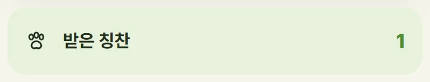
나 탭 기록 배지 네 개(첫 봉사 · 5회 · 10회 · 보호소 3곳)를 모두 모으면 「발자국」 이름으로 명예의 전당 글이 저절로 올라가요 — 「○번째 주인공」은 다 모은 순서예요. 모두에게 축하 알림이 가고, 하트 · 댓글로 축하할 수 있어요.
배지는 운영진이 확정한 봉사로만 세요. 그래서 운영진이 봉사를 확정하는 순간 올라가요. 「보호소 3곳」은 적립(후원금·사료)이 있는 봉사의 보호소로 세요. 한 사람에 한 번만 올라가고, 나 탭 배지 칸에 「명예의 전당 ○번째」가 붙어요. 이 글은 아무도 고칠 수 없고, 지우기는 운영진만 할 수 있어요.
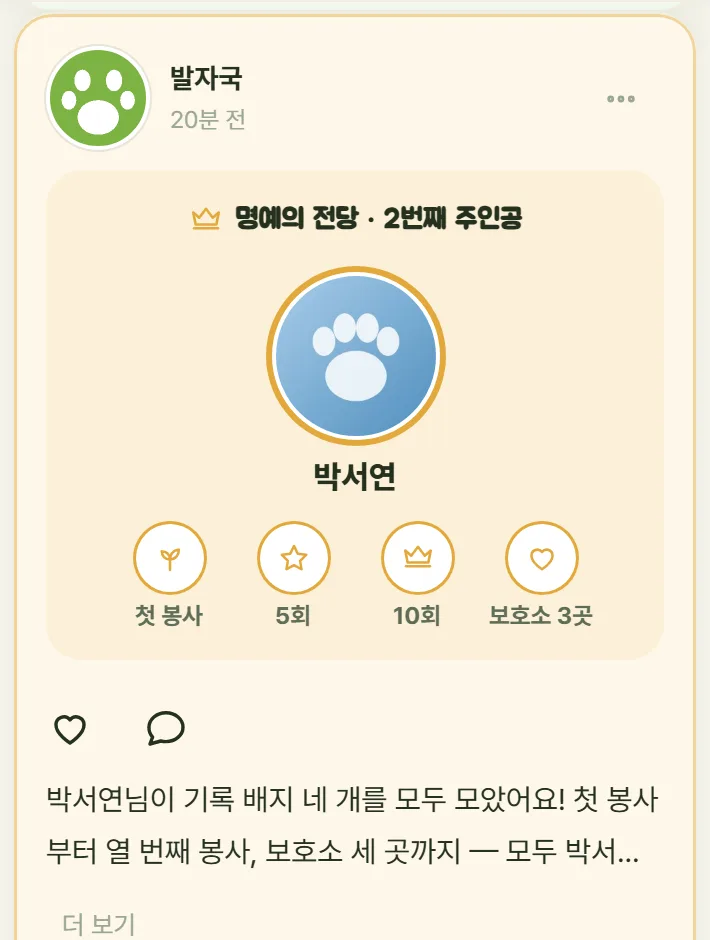
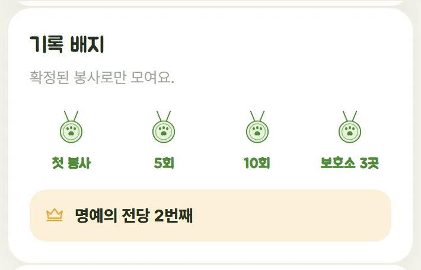
사진 콘테스트 — 내가 찍은 사진이 제일 잘나가 📸
시작일은 운영진이 정해요. 그날이 되면 설문 탭 맨 위에 카드가 보여요 — 그 전에는 카드가 없어요.
설문 탭 맨 위 내가 찍은 사진이 제일 잘나가 카드 → 내 작품 내기.
① 사진 1장 또는 영상 1개(30초 · 20MB 이하)
② 제목(20자까지) · 설명(200자까지)
③ 어느 봉사지에서? — 내가 간 지난 봉사를 고르면 보호소 이름이 채워져요. 목록에 없으면 직접 적어요
④ 사진·영상 속 아이 이름 — 그 보호소 아이 이름을 눌러 고르거나 적어요(여럿이면 쉼표로). 모르면 이름을 몰라요
→ 작품 내기. 모두 꼭 채워야 해요.
사진은 후기보다 크게(긴 변 2048px) 올라가요.
카드의 내 작품을 누르면 고칠 수 있어요. 시트 아래 이 작품 지우기도 있어요. 마감 전까지만 돼요 — 마감 뒤에는 보기만 할 수 있어요.
투표 전까지 작품은 나와 운영진만 볼 수 있어요.
다른 사람에게는 「지금까지 n작품 도착」 숫자만 보여요 — 익명 투표를 공정하게 하려고요.
투표는 마감 뒤에 열려요. 열리면 알려 드릴게요.
발자국 이야기 — 보호소 아이 소개
홈 오른쪽 아래 + → 발자국 이야기 → 세 단계면 끝나요.
① 어떤 아이인가요? — 보호소(목록에서 고르기) · 이름(20자까지) · 성별(남아 · 여아 · 모름) ·
나이(「2살」 「추정 3살」처럼 짧게, 모르면 모름)
② 어떤 이야기를 들려줄까요? — 1000자까지
③ 사진 1~5장 — 한 장은 꼭 넣어요. 영상은 안 돼요 → 올리기
홈 위 칩 이야기를 누르면 이야기 글만 모여요(전체에도 보여요). 카드에 사진과 하트 줄 아래 「🐾 이름 · 여아 · 2살」 「📍보호소」 한 줄이 붙어요. 하트 · 댓글 · 「더 보기」는 다른 글과 같아요.
올리면 모두에게 「🐾 ○○ △△의 이야기가 올라왔어요」 알림이 한 번 가요(알림 설정의 새 글과 같은 칸). 고치기 · 지우기는 쓴 사람이 글 ···에서 해요. 운영진은 지우기만 할 수 있어요.
10. 자주 묻는 질문
이름이 명부와 똑같은지, 뒤 4자리가 동아리에 적어낸 번호인지 봐주세요. 번호를 바꾸셨다면 운영진에게 말씀해주세요. 1시간 안에 5번 틀리면 1시간 잠겨요. 천천히 해주세요.
예전에 다른 카카오 계정(주로 카카오톡 안)으로 연결하셨을 수 있어요. 그 화면의 카카오 계정 다시 고르기 → 카카오톡에서 쓰는 계정을 골라 주세요. 그래도 안 되면 운영진에게 말씀해주시면 풀어드려요.
차례대로 봐주세요.
① 카카오톡 · 인스타 · 네이버 앱 안에서 열지 않았나요? 다른 브라우저로 열기로 옮겨 주세요(위 3번 「알림 켜기가 안 될 때」)
② 아이폰이면 홈 화면 아이콘으로 들어왔나요? (사파리 탭에서는 안 와요)
③ 폰이 방해금지 모드는 아닌가요?
④ 브라우저 설정에서 이 사이트 알림이 허용인가요?
⑤ 아이폰은 iOS 16.4 이상이어야 해요
⑥ 알림 설정에 「알림을 받고 있어요」가 떠 있나요? 「알림 켜기」가 그대로 보이면
아직 안 켜진 거예요 — 위 3번 「알림 켜기가 안 될 때」를 봐주세요
글쓴이나 운영진이 지운 글이에요. 예전 알림이나 링크로 열면 이렇게 떠요 — 홈에서 다른 글을 봐주세요.
운영진이 그 봉사를 확정해야 올라가요. 보통 봉사 다음에 정리해요.
이제 커뮤니티 봉사 탭에서 해요. 설문과 1365도 여기로 옮겼어요. 옛 링크로 들어가도 안내가 나와요.
위 1번 본인 확인을 먼저 마쳐야 해요. 카카오 로그인만으로는 안 열려요.
운영진용
운영진 화면 봉사 탭 → 달력에서 날짜 고르기 → 이 날 봉사모임 만들기 → 네 단계(날짜 · 보호소 · 정원 · 신청 열기). 만드는 순간 전체에게 봉사 열림 알림이 가요(신청 열기 시각을 늦춰도 알림은 바로 가요).
다녀온 뒤 명단을 고치고 봉사 확정하기를 눌러야 실적과 적립이 쌓여요. 확정 전에는 아무 숫자도 안 올라가요.
확정한 뒤나 봉사 날이 지난 뒤에는 명단에서 사람을 빼도 대기자가 자동으로 안 올라가요. 안 간 사람이 실적에 잡히면 안 되니까요.
홈 + → 공지. 「맨 위에 고정」을 고르면 모두의 홈 맨 위에 붙어요 (세 개까지, 고정은 처음부터 켜져 있어요). 세 개가 차 있으면 새 공지는 「공지는 세 개까지예요」로 안 올라가요. 내린 공지를 다시 공지로 올리기 할 때는 가장 오래된 공지를 내리고 올릴지 물어봐요.
홈 맨 위 고정 공지 줄을 눌러 펼친 뒤 오른쪽 위 ···(운영진에게만 보여요) → 남의 공지는 공지 고치기 · 글 삭제 · 공지 내리기, 내 공지는 글 고치기 · 글 지우기 · 공지 내리기. 공지는 운영진 누구나 고칠 수 있어요. 내린 글은 피드에 그대로 남고, 그 글 ··· → 다시 공지로 올리기로 되돌릴 수 있어요.
설문 탭 오른쪽 아래 + → 설문 만들기. 만들면 먼저 임시 저장돼요 — 이때는 구성원에게 안 보이고 알림도 안 가요. 다 고친 뒤 올리기 (알림 보내기) 를 누르는 순간 모두에게 보이고, 알림이 한 번 가요.
임시 저장 중에는 몇 번을 고쳐도 알림이 가지 않아요.
운영진 화면 맨 위에 확정 안 한 봉사 · 가입 대기 · 신고 · 받은 의견 · 운영진 지원 개수가 떠요. 챙길 게 없으면 안 보여요.
받은 의견과 운영진 지원은 눌러서 답장하기를 할 수 있어요. 답장은 보낸 사람에게 새 소식과 알림으로 가요. 이름 없이 보낸 의견은 답장할 수 없어요.
구성원 탭 → 연결 안 함 칩으로 걸러 볼 수 있어요. 연결 안 한 사람이 있으면 연결 안 한 n명에게 보낼 안내 문구 복사가 보여요 (이름 목록은 안 들어가요).
구성원마다 최근 접속이 「오늘 · 어제 · n일 전 · n주 전 · n달 전 · 접속 안 함」으로 보여요. 앱을 연 날짜만 남고, 몇 시에 무엇을 봤는지는 남지 않아요.
명부와 안 이어진 로그인 n개 — 카카오로는 들어왔는데 이름 · 뒤 4자리 확인을 안 한 계정이에요. 카카오 닉네임과 들어온 날만 보여요. 이대로면 알림도 안 가고 커뮤니티도 못 봐요. 본인 확인 안내 문구 복사를 눌러 단톡방에 올려 주세요 (「카카오 계정 다시 고르기」 안내까지 들어 있어요). 줄마다 잇기(그 계정을 구성원에 연결) · 지우기(목록에서 없앰 — 그 계정이 다시 들어오면 본인 확인부터)가 있어요.
글이나 댓글 ··· → 글 삭제 / 댓글 삭제 (댓글 ···는 말풍선으로 연 댓글 화면에 있어요). 지우면 댓글·사진·반응도 같이 사라져요. 지우면 되돌릴 수 없어요 — 확인을 한 번 물어봐요. 신고가 들어오면 할 일에 떠요.
구성원 탭 → 그 사람 → 역할을 운영진으로. 마지막 운영진은 해제할 수 없어요 (아무도 못 들어가게 되니까요).